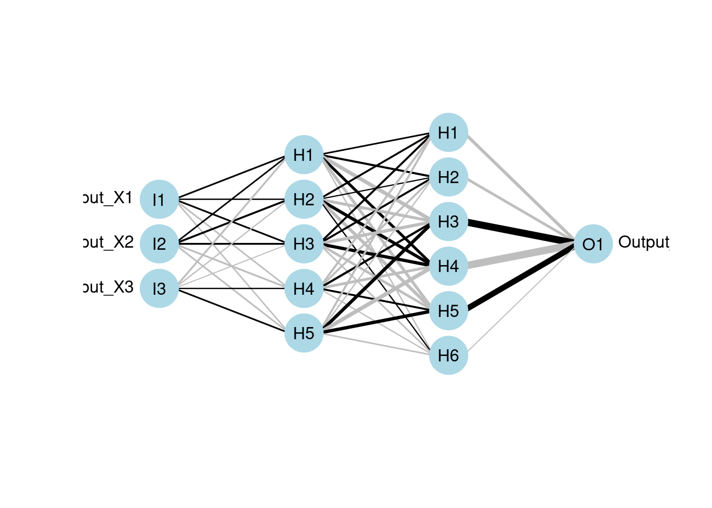

48 Neural network tools in R
Yuan Wang
#install.packages("NeuralNetTools")
#install.packages("nnet")
#install.packages("RSNNS")
#install.packages("neuralnet")
library("NeuralNetTools")
library("RSNNS")
library("nnet")
library("neuralnet")48.1 Introduction
Deep learning plays a key role in today’s data science, given the advance of accessible computing resources and the algorithm’s performance and versatility. However, building an efficient neural network requires careful architecture design which is crucial for improving the output accuracy of the network’s prediction. Since neural network is designed to train extremely large datasets, it’s often difficult to come up with ideas of fine tuning the model. Thus, providing a visual representation allows us to inspect its structure more clearly. With the help of R packages NeuralNetTools, we can visualize the network’s structure, evaluate variable importance and conduct sensitivity analysis, which makes it easier to interpret and gives insights into fine-tuning strategies.
48.1.1 Packages will be introduced:
- Basics: Neuralnettools, nnet, Neuralnet, RSNNS,
- Additional: keras
48.1.2 Some background knowledge of neural networks:
This tutorial focuses on supervised learning problems where the goal of the neural network is to map inputs to given labels. In a supervised learning setting, the datasets will contain: 1. Observations: - data collected to be trained and tested
Inputs: random observations from a standard normal distribution
Input variables (X’s in regression): features that may represent the labels
Outputs (Y’s in regression): predictions of targeted labels using linear combinations of the input variables with additional random components (they are scaled from 0 to 1 using softmax function)
48.1.3 Data pre-processing
48.1.3.1 Common approach for deep learning:
Normalize the input variables (inputs —> X’s)
Standardize the response variables (predictions/fitted values —> Y’s)
For images, it also need to be flattened to new shape.
The purpose of pre-processing data is to standardize the data to make them range from 0 to 1. To demonstrate this approach, we use MNIST dataset which consists of 28 x 28 grayscale images of handwritten digits.
Loading well-known neural net dataset such as MNIST requires package keras which is R’s interface to Keras, a widely used high-level neural networks API built in python. Note that R’s miniconda is also required and TensorFlow should be installed by “install_tensorflow()” to prevent loading errors. Datasets for neural networks in keras are already standardized, but we still need to do an extra step of reshaping them.
48.1.3.2 Reshape
Neural networks are heavily used in computer vision where datasets are images that were 3-dimensional array (images,width,height) of grayscale values. So first we need to flatten the 3-d array into a matrix by reshaping it into a single dimension. In MNIST images are 28x28 array which will be flatten to a vector of length 784. To do so, we use keras function array_reshape(data, newshape). The “data” parameter should be array-like and the “newshape” parameter should be an integer or array. If it’s an integer, say n, “data” will be shaped to a matrix of n rows with #columns = size(data)/n. If it’s an array, it should be compatible with the original 3-d array, so size(newshape) = size(data). Keras provides the array_shape() function to do reshaping. For MNIST data, reshaping can be accomplished by “array_reshape(x_train, c(nrow(x_train), 784))”.
The goal of the neural network is to correctly identify the written digit in the image. Since this tutorial focuses on visualization, you can find more information and the code to train MNIST using keras in https://rdrr.io/cran/keras/f/vignettes/index.Rmd.
48.2 Visualization of Neural Networks
48.2.1 Neuralnettools package
A set of visualization and analysis tools used to interpret the structure of neural net models. This is the main package for plotting a neural interpretation diagram (NID) with nodes, layers and edges, to help you visually understand its architecture and training progress. The visualization can give you some insights into how to fine tune the model.
48.2.2 Four core functions of NeuralNetTools
plotnet: to plot the for visualization
garson & olden: to evaluate importance of input variables
lekprofile: to conduct sensitivity analysis (how sensitive is an input variable?)
These functions are built upon nnet, neuralnet, RSNNS, and caret.
48.2.3 Neural Interpretation Diagram (NID)
Neural interpretatiion diagram (NID) is a graph representation with nodes and edges divided into vertical layers. The stages of training the network can be seen horizontally. Nodes represent three types of variables of the underlying neural network 1. Input variables (1st layer) 2. Hidden variables (layers between 1st and last layers) 3. Output variables (last layer)
The nodes are called units in neural networks. The connection between a pair of nodes is like a directed edge from the node in the former layer to the pointed node in the next layer. It represent the existence of contribution from the predecessor node to the next node. For example, if there is a connection from node x to node y, x is included in the linear combination of y.
The diagram illustrates the idea of a feedforward neural network where information only moves in one direction which is the horizontal direction of the NID. It’s best illustrated with an actual NID.
Load the data and train the dataset using three different functions.
A simple dataset from neuraldat is used for the purpose of demonstration. Summaries of training results are assigned to “mod#” variable which will be used as arguments for visualization later.
Example: neuraldat (normalized dataset in NerualNetTools). It contains - 2000 rows of observations - 3 input variables (X1, X2, and X3) - 5 columns of two response variables (Y1 and Y2)
(Note: if package loading Rcpp error occurs, try update.packages() to update packages in your r environment)
set.seed(123)
x <- neuraldat[, c("X1", "X2", "X3")]
y <- neuraldat[, "Y1"]
mod1 <- mlp(x, y, size = 5)
mod2 <- neuralnet(Y1 ~ X1 + X2 + X3, data = neuraldat, hidden = 5)
mod3 <- nnet(Y1 ~ X1 + X2 + X3, data = neuraldat, size = 5)## # weights: 26
## initial value 102.608189
## iter 10 value 0.420687
## iter 20 value 0.230286
## iter 30 value 0.161667
## iter 40 value 0.042549
## iter 50 value 0.019999
## iter 60 value 0.016232
## iter 70 value 0.013683
## iter 80 value 0.011934
## iter 90 value 0.011545
## iter 100 value 0.010132
## final value 0.010132
## stopped after 100 iterationsWe can then plot NIDs of the models above using plotnet:
plotnet(mod1)
plotnet(mod2)
plotnet(mod3)Notice that if you run the models several time, each run will give you a different result and thus a different NID plot. The difference is in the direction, color and thickness of the connections which will discussed in details later.
48.2.3.1 When to terminate the training
Running nnet() will output a list of the loss of each tenth iteration up to 100. You can see here the traning stops at an error of 0.010132 between the target (ground truth) and the fitted value. It does not satisfy the default absolute tolerance of the fitting criterion, but training reaches the default maximum number of iterations of 100 so that it stops.
In other words, the training process will stop under two conditions:
1. its loss is smaller than the fitting criterion, or
2. it reaches the maximum number of iterations allowed.
We can customize the two by specifying tolerance and maxit in nnet().
mod4 <- nnet(Y1 ~ X1 + X2 + X3, data = neuraldat, size = 5, maxit=200)## # weights: 26
## initial value 74.693524
## iter 10 value 0.458543
## iter 20 value 0.180504
## iter 30 value 0.030452
## iter 40 value 0.025113
## iter 50 value 0.021237
## iter 60 value 0.017340
## iter 70 value 0.009561
## iter 80 value 0.005930
## iter 90 value 0.005084
## iter 100 value 0.004484
## iter 110 value 0.004201
## iter 120 value 0.004032
## iter 130 value 0.003599
## iter 140 value 0.002484
## iter 150 value 0.002059
## iter 160 value 0.002014
## iter 170 value 0.002009
## iter 180 value 0.001882
## iter 190 value 0.001719
## iter 200 value 0.001654
## final value 0.001654
## stopped after 200 iterations
mod5 <- nnet(Y1 ~ X1 + X2 + X3, data = neuraldat, size = 5, maxit=300, abstol=0.01)## # weights: 26
## initial value 95.238709
## iter 10 value 0.639464
## iter 20 value 0.111136
## iter 30 value 0.034965
## iter 40 value 0.027499
## iter 50 value 0.022252
## iter 60 value 0.017605
## iter 70 value 0.014490
## iter 80 value 0.011656
## final value 0.009720
## convergedClearly we see from the outputs that mod4 runs 200 iterations and stopped at a loss of 0.002367 which does not reach the fitting criterion, while mod5, which specifies an absolute tolerance of 0.01 and a maximum of 300 iterations, converges with a final loss value of 0.009917 and terminates after 110 iterations (did not use up all 300 iterations because the fitting criterion is satisfied).
48.2.3.2 Further explaination of the three model functions used above:
- “mlp”:
A multilayer perceptron (MLP), which is fully connected feedforward networks (probably most common network architecture in practice)
-
Some useful options:
hiddenActFunc: the activation function of all hidden units (popular choice: ReLU)
outputActFunc: the activation function of all output units (popular choice: softmax)
inputsTest: a matrix of the testing set to examine the fitting of the model
pruneFunc & pruneFunParams: pruning function and parameters (explained later)
-
size: specifies the number of units in hidden layers.
- When using multiple hidden layers, specify the size argument to be a vector whose length equals the number of layers and i-th element of this vector is the number of units in i-th hidden layer.
- ex. mlp(x, y, size = c(5, 6)) –> two hidden layers and the 1st layer has 5 units and the 2nd layer has 6 units.

- “neuralnet”:
- It also supports multi-layer networks by specifying “hidden” argument (just like the “size” argument in mlp)
- It is flexible in terms of setting loss and activation function
- But it only provide minimal visual interpretation of the network with the basic structure which mainly illustrates connections between layers
Using neuralnet for multilayer:
Ex. three hidden layers with 3 units, 5 units and 7 units respectively.
mod7 <- neuralnet(Y1 ~ X1 + X2 + X3, data = neuraldat, hidden = c(3, 5, 7))
# visualize the model using plotnet
plotnet(mod7)- “nnet(x, …)”
Provides customization for visualization to demonstrate variable importance reflected by the units and edges
But it only supports feedforward neural networks with single hidden layer
-
Syntax:
nnet(formula, data, weights, …, subset, na.action, contrasts = NULL)
nnet(x, y, weights, size, Wts, mask, linout = FALSE, entropy = FALSE, softmax = FALSE, censored = FALSE, skip = FALSE, rang = 0.7, decay = 0, maxit = 100, Hess = FALSE, trace = TRUE, MaxNWts = 1000, abstol = 1.0e-4, reltol = 1.0e-8, …)
Some useful nnet options:
| name | description |
|---|---|
| formula | linear combination of x’s for y |
| x | matrix or data frame of input variables X |
| y | matrix or data frame of Y |
| weights | (case) weights for each example (default: 1) |
| size | number of units in the hidden layers |
| subset | an index vector containing which observations will be used in training. The rest is for the test set. |
| Wts | initialization of weights - it will get more accurate as the training progresses; default: randomly chosen. |
| entropy | switch for maximum conditional likelihood likelihood (default to least-square) |
| softmax | switch for softmax and maximum conditional likelihood likelihood (default to least-square) |
| skip | add skip-layer connections from input to output to the primary netwrork - viewing both primary and skip networks is recommemded to see which one has larger relative weights - in the case of no hidden layers, plotting a network with only a skip layer will include bias connections to the output layer |
| decay | parameter for weight decay - weight decay is used to penalize complexity of haveing too many units by adding the weights to the loss function |
| maxit | maximum number of iterations MaxNwts: maximum allowable number of weights |
| abstol | stopping criterion of the training (absolute tolerance) - Example: default value is abstol = 1.0e-4, so if the absolute error between ground truth and the model’s prediction falls below 1.0e-4, the training ends. |
| reltol | stopping criterion relative to the previous errors (relative tolerance) - Example: default value is reltol = 1.0e-8, so if the relative error between ground truth and the model’s prediction falls below 1.0e-8, the training ends. |
Note that the differe between “abstol” and “reltol” is that Abs(prediction - target) <= absTol, OR Abs(preiction - target) <= relTol * Max(Abs(prediction), Abs(target))
48.2.4 NeuralNetTools::plotnet
This is the plotting function to visualize the neural networks from the model. It will plot a diagram of net structure (NID), with support of customization. Features of a NID includes:
| Feature | Description |
|---|---|
| Connection is a black line | Black means it’s a positive weight |
| Connection is a gray line | Gray means it’s a negative weight |
| Line thickness | Visually show the magnitude of the node’s weight (thicker lines mean larger weights, so the node is more influential) |
-
Examples of plotnet’s more advanced customization:
-
Primary and skip layer network:
- skip bypasses hidden layers, to demonstrate logical connections from the input layer to the output layer
-
Prune connections or nodes (RSNNS package):
- The idea of pruning is to remove connections or nodes in the network, if they do not contribute to the netwaork’s performance of predicting targets (hteir weights are close to zero). Doing so improves the network’s performance, since it reduces the number of estimations of wieghts.
-
Code:
# skip
mod1 <- nnet(Y1 ~ X1 + X2 + X3, data = neuraldat, size = 5)## # weights: 26
## initial value 37.536429
## iter 10 value 3.473930
## iter 20 value 0.300459
## iter 30 value 0.110746
## iter 40 value 0.075740
## iter 50 value 0.029781
## iter 60 value 0.021122
## iter 70 value 0.012062
## iter 80 value 0.011070
## iter 90 value 0.009380
## iter 100 value 0.006579
## final value 0.006579
## stopped after 100 iterations
plotnet(mod1, skip = TRUE)
# prune
# pruned model using code from RSSNS pruning demo
pruneFuncParams <- list(max_pr_error_increase = 10.0,
pr_accepted_error = 1.0,
no_of_pr_retrain_cycles = 1000,
min_error_to_stop = 0.01,
init_matrix_value = 1e-6,
input_pruning = TRUE,
hidden_pruning = TRUE)
mod <- mlp(x, y, size = 5, pruneFunc = "OptimalBrainSurgeon",
pruneFuncParams = pruneFuncParams)
plotnet(mod, rel_rsc = c(3, 8))RSNNSs provides several prune functions, including MagPruning, OptimalBrainSurgeon, OptimalBrainDamage, Noncontributing_Units, and Skeletonization. You can review the original OBS paper here https://authors.library.caltech.edu/54981/1/Optimal%20Brain%20Surgeon%20and%20general%20network%20pruning.pdf, which can give you more perspectives into pruning.
The pruneFuncParames are arguments we pass to the prune function. For example, in the code above, the parameters it uses are:
| Parameter | Description |
|---|---|
| max_p r_error_increase | Maximum error increase in % (float) |
| p r_accepted_error | Accepted error (float) |
| no_of_p r_retrain_cycles | Number of cycles for retraining (integer) |
| m in_error_to_stop | Minimum error to stop (float) |
| i nit_matrix_value | Initial value for matrix (float) |
| input_pruning | if true, do input pruning (boolean) |
| hidden_pruning | if true, do hidden pruning (boolean) |
48.2.5 Alternative to NID:
The neural network is often complex with large numbers of layers, nodes, and edges, which makes it difficult to interpret. In this case, we can use the second and third main functions of the packages, garson and olden as alternatives by deconstructing the weights to interpret variable importance.
They are named after two approaches:
-
Garson’s
It analyzes relative importance of each variable through magnitude.
-
Limitation:
Sometimes responses cannot be determined
It can only evaluate neural nets with one hidden and one output node
-
-
Olden’s
A more flexible approach by measuring variable importance as the summed product of input-hidden and hidden-output onnection weights between input and output
-
Advantages:
- maintain both magnitude and sign. Thus, the canceling effect resulted from different signs of incoming and out coming connections of an node is maintained.
- It can evaluate multiple hidden layers and responses.
-
garson(mod1)
garson(mod2)
garson(mod5)
olden(mod1)
olden(mod2)
olden(mod5)These bar chars of the importance of each input variable provides a straightforward visual presentation of how influential each variable is to the outputs.
48.2.6 Sensitivity analysis:
Sensitivity analysis shows how sensitive an input variable (feature) and is necessary for us to understand the relationship and the influence of each input parameter on the outputs.
48.2.6.1 Lekprofile
This function uses Lek’s profile method to evaluate the behavior of outputs across different values of the input variables. It’s generic and can be applied to any predictive method.
Two options for setting constant values of unevaluated explanatory variables:
| Parameter | Description |
|---|---|
| group_vals |
A vector with calues from 0-1 indicating the quantiles at which the input variables will be hold constant. OR A single value indicating the number of groups.
|
| group_show | if set true, a barplot showing values of input variables is returned instead. |
lekprofile(mod3)
lekprofile(mod3, group_show = TRUE)
lekprofile(mod3, group_vals = 6)
lekprofile(mod3, group_vals = 6, group_show = TRUE)These plots show the influence of varying each input variable at different quantiles to the value of response outputs, while holding other input variables constant. In the plots of lines, the x-axis represents the values of each input variables, y-axis the values of the response, and different lines different values of the input variables. For example, the first plot shows that X1 and X3 are more sensitive than X2 since changes in their values result in more different response values respectively. The last plot shows that X1 is more sensitive since its value changes more dramatically across groups.
48.3 Miscellaneous
48.3.0.1 Other useful functions from the package:
-
“neuralweights”: to retrieve model weights
-
Return a two-element summary list of the network’s structure
a vector of number of nodes of each layer
a named list of model weights
It is used implicitly in main functions. We can use it explicitly when a numerical summary of the model weights is needed.
-
-
“pred_sens”: to retrieve predicted values for Lek Profile method
Return a list of predictions whose each element corresponds to a group in Lek Profile method.
It is used implicitly in “lefprofile”